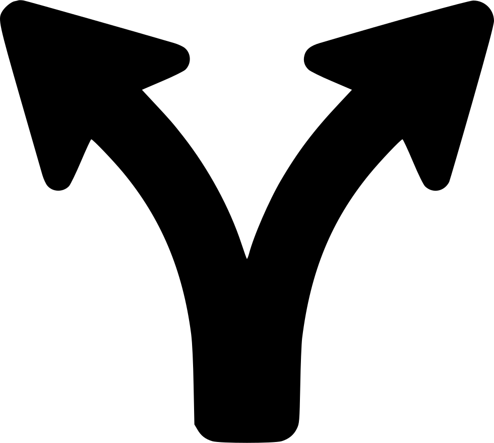

Flow Task Maker
Create Workflow with main-tasks and sub-tasks
MainTask
SubTask
Add
Branch
Delete
Switch Vertically
 MainTask
MainTask SubTask
SubTask Add
Add DeleteMainTaskSubTaskAdd Delete
DeleteMainTaskSubTaskAdd Delete